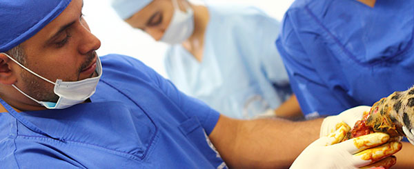

Clinica Veterinaria Aquavet
Unica como tu mascota
 Nosotros |
 Servicios |
 PetShop |
|---|---|---|
La Clínica Veterinaria AQUAVET es una empresa dedicada al cuidado de las mascotas, que lleva en el mercado desde el año 2006, trabajando en pro del bienestar de cada mascotah. |
Ofrecemos todo tipo de servicios especializados y de la mejor calidad, siempre pensando en la salud y el bienestar de las mascota y en la tranquilidad de nuestros usuarios. |
En nuestra tienda para mascotas, encontrarás todo tipo de accesorios y utilidades que te podrán facilitar la vida con tu mascota y a su vez mejorar su salud y estado de ánimo. |
 |
|---|
Quienes Somos La Clínica Veterinaria AQUAVET es una empresa dedicada al cuidado de las mascotas, que lleva en el mercado desde el año 2006, trabajando en pro del bienestar de cada mascota.
Leer mas
|